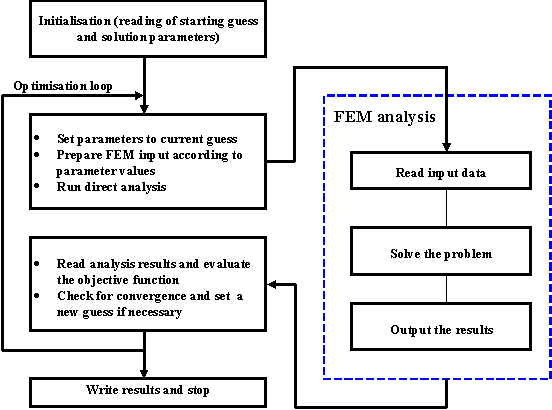
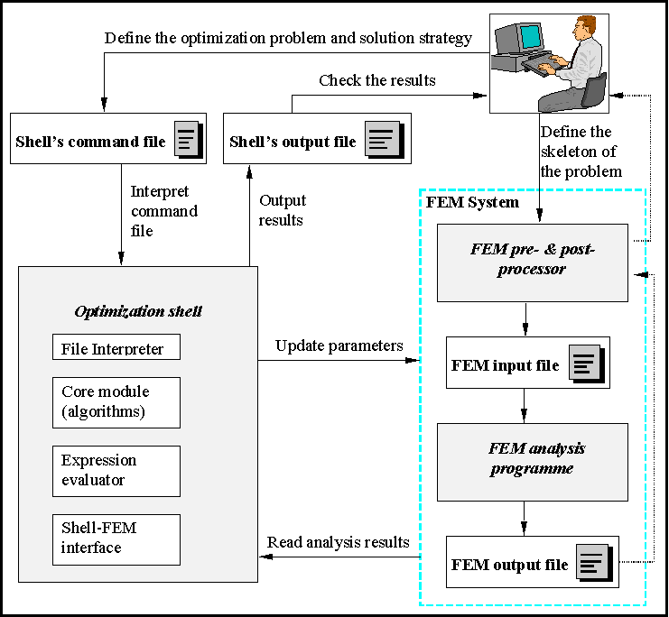
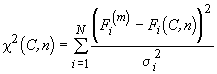
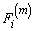
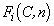
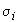
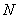
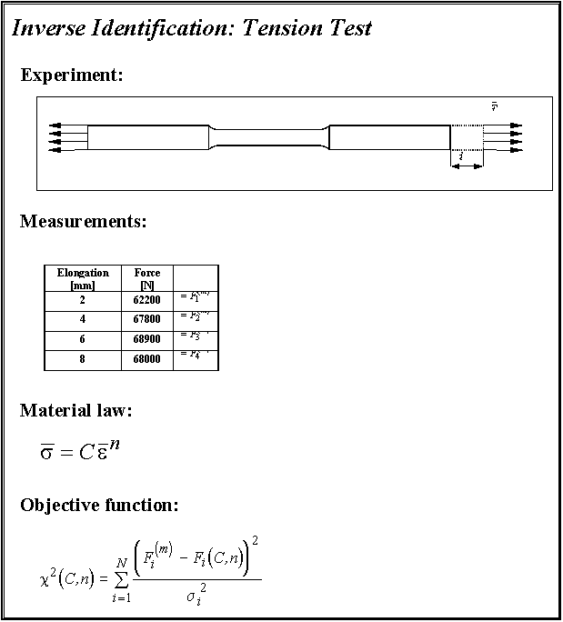

| Manuals list | Manuals list & contents | Table of contents |
A Short Guide to the
Optimisation Shell Inverse
Version 0.0
Igor Gresovnik
Ljubljana, the 20 th of November 1998
1 Introduction *
1.2 About the History of Inverse *
2.1.3 Expression evaluator (calculator) *
2.1.4 User defined variables *
2.1.5 Conection with the Simulation Programme *
2.2 Running Direct Analysis *
2.3 An Example of Running Inverse Analysis *
2.3.2 Command file for the optimisation shell *
| Manuals list | Manuals list & contents | Table of contents |
INVERSE is a general-purpose programming shell for solving inverse and optimisation problems. In principle it is designed for use with other programmes which can perform simulations of what we want to optimaze. It can be used stand-alone for testing and training purposes and for numerical experimentation.
History of INVERSE began in spring 1994. It was created for solving inverse problems in continuum mechanics. It used a finite element method based programme Elfen developed in Rockfield Software, Swansea, for direct simulations. The first interface with the simulation programme was therefore made for Elfen. It used Elfen's input and output files for accessing the data. It is believed that a direct interface with this programme will be available in a year or two. This interface will allow direct access to simulation input and output data and better control over simulation from the shell.
User of the shell is not bound by Elfen as a simulation programme because a general file interface is available in INVERSE. By this interface user can access and replace data in text files and can therefore use Inverse in connection with any simulation programme which uses text input and output files. However, for simplicity in many examples it will be assumed that user uses Elfen as a simulation programme. Sometimes in these examples functions for interfacing Elfen will be stated. User should know that he must replace these functions with appropriate code which will properly interface the simulation programme he uses.
Using the general file interface proved approximately as quick as using
built-in routines for accessing data in simulation programme's input and
output files. Therefore, the additional cost when using a simulation programme
for which interfacing functions are not yet built in the shell, should
be negligible. A direct interface would of course be much faster, but will
be available only for a limited numbers of programmes (in the future we
will try to build such interfaces for as many well known simulation programmes
as possible). However, data exchange through files should typically take
much less than a single simulation and therefore be acceptable. This especcially
holds if user can control input and output of the simulation programme
he uses well. In this case he can achieve that only the necessary data
is transfered between the simulation programme, its input and output files
and Inverse. Interfacing through files using the shell's general
file interface becomes very quick this way and there is no need for a direct
interface.
| Manuals list | Manuals list & contents | Table of contents |
| Manuals list | Manuals list & contents | Table of contents |
Igor Gresovnik began to develop Inverse in spring 1998 while finishing
his final degree at the University of Ljubljana. His idea was to gather
various tools for solving optimization and inverse problems in an organized
environment which would provide generalized methods for interaction with
simulation programmes and a flexible user interface.
The first version of the programme was completed in May 1998. It included a small collection of optimization algorithms and a line file interpreter which served as an user interface. The programme communicated with simulation programme through simple files with pre-defined syntax. Rockfield Software's programme Elfen was used for simulations. It was adapted case-to-case for use with the shell so that it printed the required final data in a specified format to the interface file.
After finishing his final degree, Igor Gresovnik devoted most of his time to the development of the programme. In November 1998 version 1.0 was finished. A system for evaluation of mathematical expressions (also referred to as "expression evaluator" or simply "calculator") was developed and line interpreter was replaced by more flexible command interpreter which allowed flow control. Initially awkward framework so developed into a programme which fitted the basic idea quite well.
In December 1998 Igor employed himself in C3M. He registered Ph.D. study at the Swansea University and continued to develop Inverse for needs of the C3M's research projects. In April 1995 version 2.0 was finished. This was an improved version 1.0 which included a general file interface with the simulation programme Elfen. From this version on there was no need any more to make changes in Elfen's code for every different case which was solved.
In October 1996 version 2.5 was finished Basic gain was a set of functions for accessing global pre-defined variables of the shell. Typical interlaced structure with unlimited data exchange between individual modules was emphasized. This structure became more obvious in version 2.7 (finished in July 1997) in which the concept of user-defined global variables (vectors and matrices at that time) was introduced. This was a great step because in previous only pre-defined variables and scalar variables of the expression evaluator were available for internal data handling, including storage and transfer between modules. In version 2.7 the user-defined functions of the interpreter and calculator through file interpreter were also enabled.
As can be seen, the development between versions 2.0 and 2.7 was relatively slow. On the other hand, this period was crucial for the development and of general concepts on which the shell is based. In this period an attempt was made to increase development capacity by training new developers, but has unfortunately failed completely. Igor Gresovnik remained the only developer of the shell till summer 1998. The reason for that were, beside extreme bad luck at the first attempt of getting new developers, also some fatal mistakes in the cadre policy committed both by Igor and by the C3M management.
Novelties have been introduced regularly since summer 1997. The basis for parallelization was built by October 1997. Syntax checker and debugger were developed by April 1998. The system of user-defined variables was changed so that every variable could hold a whole table of elements with arbitrary dimensions. Status of pre-defined variables has also changed. Their treatment became similar to the treatment of user-defined variables differing only in slightly different behaviour of some functions for handling global variables. Beside that, there are some functions which operate only on specific pre-defined variables. Scalar variables were added (before the expression evaluator variables accomplished their function). Treatment of files has also changed so that it unified with the treated of other user-defined global variables.
Summer 1998 was partially spent in adapting parts of the programme to conceptual changes which accumulated in the last year. Beside that, a general file interface was developed by July. This interface in principle enables connection of the shell with any simulation programme without adapting the shell's source code.
Summer 1998 is especially important for the shell because its developing
team got a new member for the first time. Damjan Jelovsek entered the training
period for an Inverse developer. His first assignment, done by August 1998,
was construction of an interface for reading and replacing fields in Elfen's
input and output files.
| Manuals list | Manuals list & contents | Table of contents |
Optimisation shell Inverse is designed for solving inverse and optimisation problems. Simulation programme, typically a finite element method (FEM) based programme is used for evaluation of the objective and constraint functions.
The solution scheme of tyuical problem solved by the shell is shown in Figure 1. Tasks on the left side of the figure are a part of the optimisation algorithm which minimises the objective function. The right part of the scheme is referred to as "direct analzsis" or "simulation". It represents the main part of the evaluation of the objective and constraint functions and is ususllz performed bz a separate programme or a separate module.
In the solution scheme of optimisation or inverse problems, the shell
provides optimisation algorithms and an environment in which one can link
these algorithms with the simulation programme which is used for evaluation
of the objective and constraint functinons and possibly their gradients.
Beside optimisation algorithms the shell also provides the user with other
tools necessary to approach optimisation problems effectively, i.e. tabulating
utilities, some basic mathematical tools, etc. Beside the tools which are
dierctly sed for solving optimisatiion problems, the shell provides tools
for manipulating the simulation environment which plays crucial role at
the problem definition. At the end, the shell provides an environment in
which the user can use both set of tools in order to properly define and
solve various kinds of the optimisation problems.

Figure 1:
A solution scheme for an optimisation problem.
Figure 2 shows how the shell is used in combination with a simulation programme to form a flexible optimisation system for solving inverse and optimisation problems. User of the system defines a skeleton of the direct problems that are successively solved during the optimisation process, by the simulation unitt's pre-processor.
The optimisation problem and the solution strategy are defined through the shell's command file. To ensure high flexibility at defining various problems, the command fille syntax resembles a high level programming language. All necessary supporting utilities like optimisation algorithms, function definition facilities, mathematical tools (function aproximation, matrix operations, etc.) and interfacing with the direct simulation, are provided through the pre-defined shell interpreter's functions. Data transfer between these utilities, implemented as separated modules of the shell, is provided through the shell's global variables.
In the solution procedure the shell interprets the command file. Everything
what happens is either explicitly or implicitly defined in the command
file. Typically, the core part of the solution procedure is a built-in
optimisation algorithm, whose execution is triggered from the command file.
The algorithm successively executes direct problems at different sets of
the design parameters. Direct problems are defined in a special block of
commands in the command file. The simulation interfacing functions are
used to properly update the direct analysis definition according to the
design parameters and to read and combine the analysis results to form
the information needed by the optimisation algorithm (i.e. the objective
and constraint functions values and theit derivatives with respect to the
design parameters).

Figure 2: Scheme of the optimisation
system which consists of the shell and an optimisation programme.
User of the optimisation system accesses all built-in tools of the optimisation shell through the file interpreter's functions. When the shell is run, its file interpreter interprets the command file written by the user and executes the appropriate actions.
Syntax of the command file is very simple. It consists of function names each of which is followed by an argument block in crly brackets. Curly brackets following function names are necessary even when functions take no arguments (in this case brackets are empty).
The order in which functions should be called is not defined in advance and is affected only by the logics of the procedure which is defined through the command file. For example, if we run commands which operate on files, we must take care about opening the appropriate files first. If we run an optimisation algorithm, we must previously define how the objective and constraint functions, etc., are evaluated.
The file interpreter does not enforce any rules how arguments should be passed to functions through the argument list. It is the matter of the interpreter's functions how they interpret arguments in their argument blocks. Some general rules are set about format of specific types of arguments, however functions can be written which don't obey these rules completely. These functions are exceptional and in the instructions for their use the formats of their argument lists are is always exactly described.
Beside functions which trigger pre-defined algorithms and built-in tools of the shell, there are also flow control functions, i.e. functions which enable branches and loops. The rules for these functions are the same as for the others. It is typical for them that their argument lists contain blocks of commands which are interpreted by the interpreter if certain conditions are flfilled. These conditions are specified by the user in the form of mathematical expressions which are evaluated by the shell's expression evaluator. Expression evaluator is a special module of the shell which enables evaluation of mathematical expressions.
Here is a simple example of the use of the while loop:
={i:1}
while{ (i<=10)
[
={i : i+1}
write{" i = " $i \n}
]}
The first function (=) sets expression evaluator's variable i to 1. This variable is also created because it has not existed before. The while function which is an implementation of the while loop follows. The function takes two arguments: the first one is condition - a mathematical expression in round brackets. The second one is a block in square brackets which is successively executed (interpreted) while the condition is fulfilled, i.i. while the the expression in round bracket evaluates to a non-zero value. In the present example, we add 1 to variable i and write its value while it is not greater than 10.
Beside the while loop, the interpreter knows the do loop and the if/else branch. syntax is the following:
while { (expression) [block] }
do { [block] (expression) }
if { (expression) [block1] < else [block2] > }
The do function executes the block in square brackets until the value of the expression in the round brackets becomes zero. The if function executes the block in the first square brackets if the expression in the round brackets evaluates to zero. Otherwise it executes the block in the second square brackets in the case it is given (this block is optional, which is indicated by angle brackets in the if command syntax definition). The word else is meaningless for the interpreter, but can be added for clearness of the code.
The user can define new interpreter functions by the interpreter. This can be done bz the interpreter-s function function with the following syntax:
function {name (arguments) [definition] }
name is the name of new interpreter-s function defined this way. arguments is the round brackets is a list of formal arguments where their names are separated bz spaces. The definition block follows in the square brackets. Every time the newly defined function is called in the command file, all appearences of formal parameters in the definition block are replaced by real parameters on the string bases and then the defiition block is intepreted. The appearences of formal parameters in the definition block are designated by argument names preceeded by the "$" sign.
Expression evaluator (also referred to as calculator) serves for evaluation of mathematical expressions given as string arguments of the file interpreter's functions. Its important use is in flow control functions for evaluation of conditions for loops and branches. Normally, mathematical expressions can also be used in place of numerical arguments of the file interpreter's functions (there are some rare exceptions).
There are two interpreter's functions which manipulate the expression evaluator's system, i.e. = and $. The = function assigns a numerical value to a calculator's variable and creates that variable if it has not been defined yet. The $ function assigns a definition to a calcularor's variable or function. This function also creates an object anew if it has not been defined yet.
Here is an example how these functions can be used:
= { b : 3*4 }
$ { c : b+2*a }
= { a : b/3 }
$ { f1[x,y] : a*f2[x] }
$ { f2[t] : t*t }
= { b : f2[a] }
With the first = function we assign the value of expression "3*4", i.e. 12, to the expression evaluator's variable b which is also created since it has not existed before. With the $ command which follows we define a new variable c so that it represents the expression "b+2*a". This expression does not have a defined value since the variable a has not been defined yet. The definiton of b is symbolical and its value will not be defined untill we define a. This is done with the next = function which creates the variable a and assigns the value of the expression "b/3", i.e. 4, to it. With the next $ function we define a new calculator's function named f1. It is defined the expression "a*f2[x]" where a referres to a expression evaluator's variable, x and y will be at function evaluation replaced by the arguments with which function is called, and f2 is the expression evaluator's function named f2 which is at this point not defined. The definition is again symbolical, so it will be able to use the newly defined function in expression evaluations as soon as the function f2 is defined. This is done in the next line where we define function f2 as square of its only argument. In the last line we assign the value of expression "f2[a]" to variable b. The value of b so becomes 16 instead of 12, since since the value of a is 4 and the function f2 evaluates to square of its only argument by the definition made in previous line. Because the value of b has ben changed, the value of c in expressions also changes because c is defined through an expression which contains the variable b. The value of a does not change, because the present value of the expression "b/3" has been assigned to a, not the expression itself.
The expression evaluator has pre-installed some basic mathematical functions like trigonometric and hyperbolic functions, and it knows basic algebraic operators like +, *, -, etc. The user can arbitrarily combine these functions and operators to define new evaluator's variables and functions. Besides, new functions can also be defined through the shell's file interpreter by the function definefunction. At each evaluation of such function its definition block is interpreted.
Of special importance are the pre-defined expression evaluator's functions
through which the user can access the global variables of the shell. All
relevant data are stored in such variables during the shell's execution.
Through the appropriate expression evaluator's functions these data can
be used in the flow control conditions or as arguments to file interpreter's
functios. This way, results of shell's algorithms can be used as input
for another algorithms and unlimited data transfer between different modules
and utilities of the shell is provided.
User defined variables are used for data storage and data exchange between modules and utilities of the shell. Different types of variables (i.e. scalar, vector, matrix or field variables) enable storage of different types of data. These variables are separated from the expression evaluator, but for most of their types there are pre-defined evaluator's functions which can access numerical data stored in them. Each variable type has its own set of interpreter's and evaluator's functions for handling variables of that type. This includes creating, copying and renaming variables and setting and accessing data stored in them.
Each user-defined variable can contain a multi-dimensional table of elements of a certain type. This enables grouping of pieces of data with similar meaning. Number of dimensions of such element table will be referred to as variable rank. Number of elements which a variable can hold equals products of its dimensions, or 1 if the variable rank is 0. Rank and dimensions of variables are specified by user when they are created by appropriate functions.
In argument blocks of file interpreter's functons specific data element are referred by variable element specifications. These consist of a variable name and an optional index specification. Index specification is a list of indeces in square brackets which specify the position of data element in the variable's element table. It must be given if the rank of the appropriate variable is different than zero. Let's say that the user has defined a vector variable named "v1" which holds a three-dimensional table of vectors with dimensons 2, 4 and 3. The last of its 34 elements is then referred to as "v1[2,4,3]" or "v1[2 4 3]".
Some variables have a pre-defined meaning and are reserved for carrying
exactly specified information. For example, a scalar variable named objectivemom
holds the lastly evaluated objective function(s) during the execution of
optimisation algorithms. Pre-defined variables serve for automatic storage
of important intermediate or final results of algorithms and for transfer
of data between direct analyses and optimisation algorithms.
Optimisation algorithms consequently evaluate the objective and constraint functions (and possibly their derivatives), which are defined via the simulation. The optimisation shell must therefore provide a mechanism of definining how the constraint and objective functions are evaluated, take care for performing this evaluation in the optimisation algorithms and enable proper data transfer between optimisation algorithms and direct analysis.
Two concepts are crucial for providing this functionality. First, the evaluation of the objective and constraint function is performed via interpretation of a specific block of code in the command file in which the user exactly defines how these functions are evaluated, together with execution of the simulation programme and necessary interfacing with simulation input and results. By convention this is the argument block of the interpreter's function analysis.
Second, transfer of data between the shell's built-in algorithms or utilities and the direct analysis defined by the user through the argument block of the analysis function is implemented through the shell's variables with pre-defined meaning. When an optimisation algorithm requires evaluation of the objective and constraint functions, the parameters at which the direct analysis should be perfrmed are written to the vector variable parammom and then the argument block of the analysis function is interpreted. Within this block, which defines the direct analysis, parameter values can be accessed through vector variable parammom and used in interface functions to update the simulation input according to these parameter values. The file interpreter's and expression evaluator's functions are then used to run the simulation, collect its results relevant to the optimisation algorithm and to evaluate the necessary functions like the objective and constraint funcrions and their gradients. At the end of the analysis function argument block the evaluated data must be stored in the appropriate pre-defined variables where the optimisation algorithm can pick them. For example, the objective function values must be stored in the scalar variable objectivemom.
In fact there is another interface function between each optimisation
algorithm and the direct analysis definition. This function is called in
the algorithm's code when the evaluation of the objective or constraint
function is required. It stores its input argument (vectore of parameters
set by the optimisation algorithm) to the scalar variable parammom,
interprets the argument block of function analysis, and returns
data stored in the appropriate global variables to the optimisation algorithm.
| Manuals list | Manuals list & contents | Table of contents |
The simplest use of the shell is for parametric studies, i.e. for running direct analyses at diffrent sets of parameters. Even when an inverse or oprimisation problem needs to be solved it is recommended that direct analysis is run first to test if the problem was set correctly and there are no problems with the simulation.
In this chapter en example of how to prepare a command file for running
a direct analysis at a specific set of parameters is shown. The file is
prepared for inverse analysis with two parameters and four measurements.
The meaning of specific commands is explained and some conceptual details
are are discussed on the example.
| Manuals list | Manuals list & contents | Table of contents |
An example code of how to run an inverse analysis is shown in this chapter.
The parts of the command file are explained and some conceptual details
are discussed.
The example deals with inverse identification of hardening parameters of the potential law for the hardening curve. The identification is performed on the basis of experimental data obtained with the tension test where forces at different elongations of the specimen are measured (Figure 3). Model parameters C and n are obtained by minimising the function
 , (1)
where  are measured
forces at different elongations; 
are the respective quantities calculated with the finite element model
by assuming trial values of parameters C and n; 
are the expected errors of the appropriate measurements and 
is the number of measurements.

Figure 3: Inverse identification
of hardening parameters from results of the tension test.
The code in the shell's command file which solves the problem is given below. Line numbers are added because of easier referencing. Functions comment or * are used for comments. These functions do nothing, so what is in their argument blocks can be used for in-code comments.
The setvector command in line 3 creates the vector variable meas and sets its only vector element as specified in its argument block. Vector dimension (4) is specified first, then the component values follow. meas is a vector variable with pre-defined meaning and holds the measurements for inverse analysis.
With the next setvector command vector sigma (vector of measurement errors) is set. sigma is also a vector variable with a pre-defined meaning which have by definition the same dimension as the vector meas. Since this dimension is already known because it was specified when vector meas was set, it does not need to be specified again and therefore only the four vector components are set. Vectors can be given in various different formats which will be discussed later.
A new expression evaluator's function force is defined by the $ command in line 6. This function will return the simulated forces at increments specified by the only arguments. These forces will be extracted from the simulation output by the expression evaluator's built-in functions nodreac. These functions are a part of the shell-simulation interface and can extract nodal reactions from the output of the finite element simulation programme. this function is at the moment available only for the FEM programme Elfen and extract data only for programme's output file. The shell-simulation interface must be initialised before this function is evaluated. For some other simulation programmes interfaces will be available in the future. When the interface with a particular simulation programme is not implemented in the shell, the general file interface utilities can be used to extract the data from the simulation output file. With this utilities data can be obtained from any text output file with a known format, but this requires few additional lines in th command file. The user can also build teh whole set set of interfacing functions based on the general file interface utilities.
With the analysis command in line 7 it is specified how the direct analysis at specific parameter values is performed. The argument block of this commmand is interpreted by the shell's file interpreter every time the direct analysis is performed. Therefore interpretation of this block is a part of evaluation of the objectiv eand constraint functions and possibly their derivatives with respect to parameters. Execution of the analysis function itself does not do much, actually it only stores the position of its argument block so that it can be found and interpreted when the evaluation of the objective or constraint functions or their gradients is requested.
The first command in the argument block of the analysis command, setfilein line 10, connects the file variable aninfile with the file test.dat and opens that file. The file is open for writing since aninfile ia a pre-defined file variable used for the simulation input file. The next command, initinput, initialises the shell's interface with the simulation programme's input file. This command must be executed before using functions for setting input data for the simulation. This is the property of current interface with the finite element programme Elfen and is not in general valid for interfacing with other simulation programme (see references for interfaces with other programmes or the reference for the general file interface) Among the others, the initinput command sets the file on which the interface functions wil operate to the file connected with the file variable anindile.
The setparam function which is called next is a part of the file interface. This function sets the current values of input parameters in the simulation's input file. These values are fined in the vector variable parammmom, which by convention holds current parameter values. In the interface with Elfen, the user must designate the placer in Elfen's input file where the parameters must be updated, so that the setparam function can find these places and update the appropriate values. Again, different rules apply to other interfaces.
The system command in line 13 runs the simulation programme with the updated input data which is in this case read from file. At the rest of the analysis function's argument block, the necessary results are read and the appropriate function values (like the objective function) are evaluated.
The setfile function in line 14 sets connects the file variable anoutfile with the file test.res and opens that file for reading. anoutfile is also a pre-defined file variable which represents the analysis output file.
The initoutput command initialises the part of the interface which interact with the analysis output. It must be executed before the interface functions for extracting results are called or evaluated.
The next four calls of the meas function (lines 16 to 19) specify how the values of the vector measmom will be calculated. The first argument of each function is the number of component which is evaluated and the second argument is a mathematical expression i double quote, the value of which is assigned to that component. The function meas evaluates the expression by the expression evaluator and assigns its value to the appropriate component of vector measmom. In all four cases, expressions include the expression evaluator's function force which was defined in line 6. This function includes calls to the expression evaluator's function nodreac which is a part of the shell's interface with the simulation programme Elfen. This function evlauates to a specific component of the nodal reaction at a specific node after a specific increment. The increment number, node number and component are arguments of the function, while th ereturned information is extracted from the simulation output file which becomes known to the interface when the initoutput command is executed.
The value of the objective function is in this case calculated automatically in this case from measurements meas, measurement errors sigma and simulated measurements measmom according to formula (1). This value is writteen to the scalar variable objectivemom after the analysis function's argument block is interpreted. Automatic evaluation of the objective function is instructed by setting the autochi2 option which can be used at inverse analyses. When optimisation is in question, we must always explicitly specify at the end of the analysis command's argument block how the objection function is calculated.
In lines 24 and 25 a direct analysis is run at specific values of parameters. First we set the currrent vector of parameters parammom and then run the direct analysis by the analyse command. This command triggers the interpretation of the analysis function's argument block and the prints the results of the analysis, i.e. prints the pre-defined variables in which results are stored by convention.
The inverse command in line 28 executes the inverse analysis, i.e. the algorithm which minimises the objective function. The first two parameters specify the algorithm which is used (the simplex method in this case), then a tolerance for function minimum and maximum allowed number of iteration are given and the last argument is a matrix of initial guesses. This matrix is given in a standard format in which matrices are specified in the shell. The simplex method requires one more initial guesses than the number of parameters. A setvector function is called before the call to inverse, but only the dimension of vector parammom was specified, not the components. These are set subsequently by the optimisation algorithm when it runs direct analyses.
Whenever the optimisation algorithm wants to evaluate the objective
or constraint functions or their derivatives, it calls the appropriate
shell's internal function for direct analysis. This function first copies
the parameters, which are its input arguments set by the optimisation algorithms,
to the vector variable parammom, and then triggers interpretation
of the argument block of the analysis command. At the end it passes
the appropriate pre-defined variables to the optimisation algorithm, according
to what it has requested. In the analysis function's argument block
the user defines the way how different functions requested by the optimisation
algorithm are calculated at a specific set of parameters. The parameter
values set by the algorithm can be accessed through the pre-defined vector
variable parammom. The user must programme the way how the simulation
input data is updated according to parameter values, how the simulation
is performed and how the needed data is evaluated and written to the appropriate
pre-defined variables. The shell's internal function for the direct analysis
then passes the appropriate results to the optimisation algorithm.